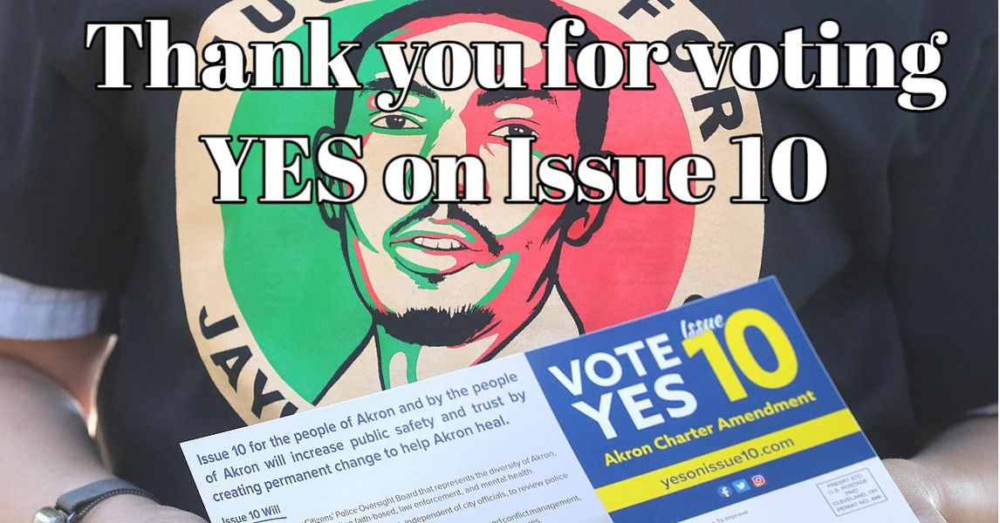

Timeline photos
The people of Akron are why I keep fighting this god-awful system that looks to keep the people under their heel while funneling mountains of cash to corporations.
You are SO good and SO hopeful and SO resilient. You deserve SO much better than the crumbs you have been given.
I love so many things about Issue 10. Here are a few:
* It was a thoughtful, measured response in the face of a tsunami of anger and hate and anguish. You had every right to want to burn it all down. And we definitely talked about it. But instead, you made Issue 10. How beautiful is that. Every great spiritual guide through the history of time is looking upon you with admiration and beautiful wonder.
* It is a truly meaningful response to what Justice for Jayland looks like.
* You so cleverly by-passed the slime monster politicians by taking your ideas directly to the people. It was an incredible force of pure Democracy. I hope we learn from this and take more issues directly to the people.
The Slime Monsters like Jeff Fusco are, right now, seething in their bogs of decay and rot planning their insidious conniving plot to destroy this beautiful declaration of hope and common sense.
Our fight (with this and the eternal fight between Good and Evil) will now enter a new phase. You are going to need City Council People and a Mayor who will craft the Details of what Issue 10 manifests itself into.
You may be tired. But you cannot rest.
We must now push for the May 2023 election where every single Akron city council member and the mayor will be decided in the Democratic primary.
I love you. You are the love and hope and optimism that drives me forward to fight this oppressive system of pessimism and hate.
- Sage
Running for Ward 8 City Council in May 2023 in Akron Ohio.